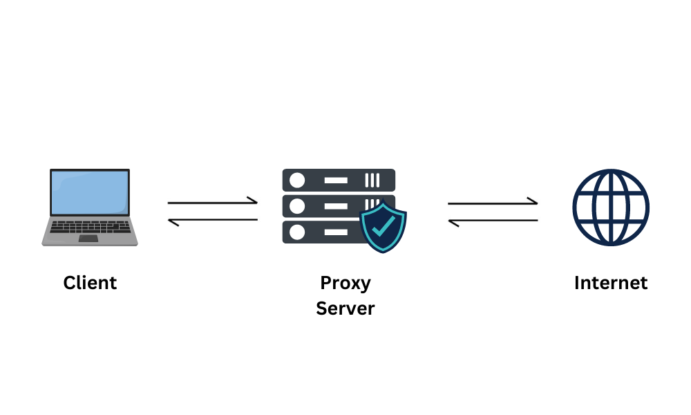
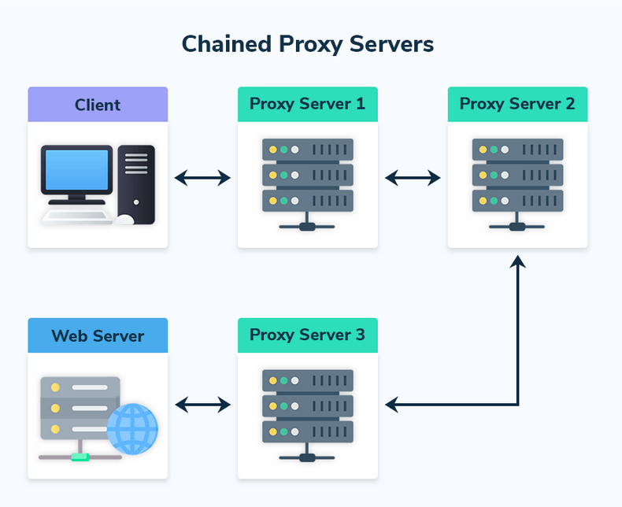
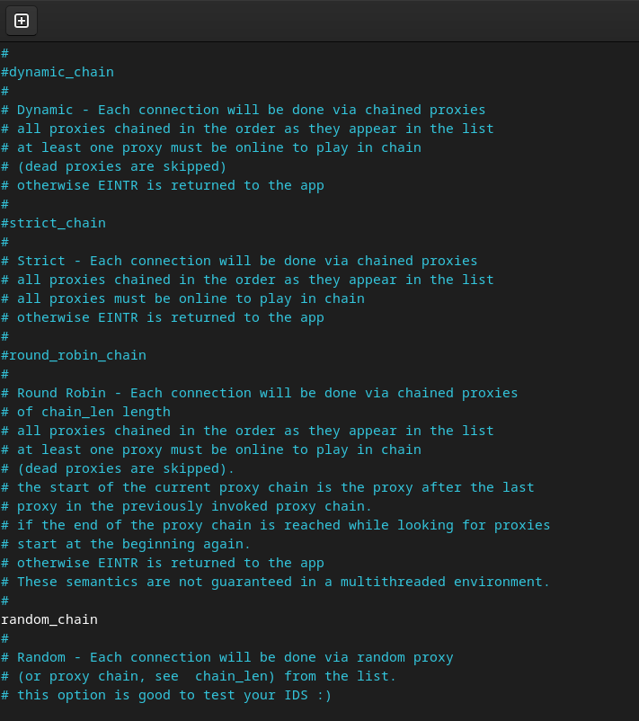
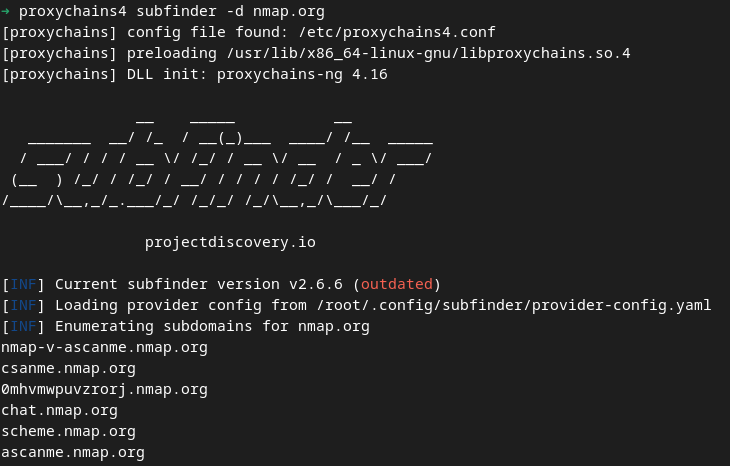

Proxychains can be an essential tool in the current digital context, where issues of privacy, censorship, and security are constantly in evidence, given the possibility of anonymizing internet connections by redirecting them through a chain of proxies, masking the user's real IP address.
Concepts
Proxies
A proxy is an intermediary server that acts as a point of intermediation between the user's device and
the destination server, redirecting and managing network traffic. It allows access requests to be
masked, hiding the user's original IP and assigning a new IP associated with the proxy. In addition to
providing anonymity, proxies are widely used to bypass access restrictions, balance network loads, and
monitor traffic.

Proxychains
Proxychains is a network traffic redirection tool that
allows running programs through a chain of proxies, providing greater anonymity and control over
connections. Its main function is to intercept application network calls and redirect them through
intermediate servers (proxies), such as SOCKS4, SOCKS5, and HTTP(S), which are configured in a specific
file.

HTTP/HTTPS
HTTP (Hypertext Transfer Protocol) is the communication protocol that allows the exchange of information
between browsers and servers on the web. It works as a request and response system, where the browser
requests resources, such as text or images, and the server responds by sending the requested data.
HTTPS (Hypertext Transfer Protocol Secure) is the secure version of HTTP, which uses encryption through
the TLS (Transport Layer Security) protocol to protect transmitted data. This security is essential to
protect sensitive information, such as passwords and financial data, especially in online transactions.
SOCKS4/SOCKS5
SOCKS4 and SOCKS5 are versions of a proxy protocol that operates at the network transport level,
redirecting traffic between client and server without interpreting the transmitted data. SOCKS4 only
supports TCP connections, being mainly used for basic traffic redirection. SOCKS5 is a more advanced
evolution, with support for TCP and UDP connections, username and password authentication, and
compatibility with IPv6, making it more versatile for modern applications that require greater
flexibility and security.
Tor
The Tor network (The Onion Router) is a communication network that allows anonymizing internet browsing
by routing data traffic through a series of nodes (servers) distributed globally. Communication is
encrypted in multiple layers, like the layers of an onion, ensuring that the origin, destination, and
content of the data are protected.
For creating websites on the Tor network, click
here.
For creating a Windows environment focused on OPSEC, where all traffic passes through the Tor network,
click here.
Hands-on
Searching for Proxy Lists
Searching for proxy lists is essential for the effective functioning of Proxychains, as its operation
depends directly on the quality and availability of the configured proxies. A reliable and diverse list
ensures greater anonymity, allowing connections to be routed through multiple intermediate servers and
making traffic tracking difficult. It is worth noting that proxy servers can see the connection, but
what they can observe depends on the type of proxy and the protocol used.
An HTTP proxy can see all the content of unencrypted requests and responses, such as URLs,
headers, and transmitted data. In the case of HTTPS connections, the proxy only sees the domain
being accessed (via SNI), but not the content, which is protected by TLS encryption.
SOCKS4 and SOCKS5 proxies operate at a lower level, only retransmitting data packets between the
client and the destination server. They do not interpret the connection content but can see the
communication metadata, such as the source and destination IP addresses.
Even in encrypted connections (such as HTTPS or VPNs), the final proxy, which forwards the traffic to
the destination, can record information such as the client's IP address, connection times, and the
volume of transmitted data. Therefore, trust in the proxy operator is crucial to ensure privacy and
security.
In sensitive networks, using tools like TOR can help mitigate these risks by adding additional layers of
anonymity.
For study purposes, proxies found in this proxy-list were used. However, it is not
recommended to use it for non-educational purposes, as it does not ensure any security and reliability.
Installing Tor
Using Tor in conjunction with the Proxychains tool is essential to increase anonymity and security in
network connections. While Proxychains allows chaining multiple proxies, TOR adds a robust layer of
anonymization by routing them through its distributed network, composed of volunteer nodes that make
tracing the origin and destination of traffic difficult.
Therefore, to install Tor, with administrative permissions, use the command below:
sudo apt install tor -y
After installation, verify if the service is active:
systemctl status tor

Installing Proxychains
To install the Proxychains tool, with administrative permissions, use the command below:
sudo apt install proxychains4
To validate your installation, type the command proxychains4 in the terminal and wait for the tool's default response.

Understanding Proxychains
Proxychains configuration is done through the default definition file, located at
/etc/proxychains4.conf. This file defines how the tool operates, allowing 4 proxy management
options, which are:
Dynamic Chain: With this configuration, the tool will attempt to use proxies in the listed order.
However, if a proxy fails, it will be skipped and the tool will move on to the next one.
Strict Chain: Each proxy is used in the listed order, from first to second, third, and so on. If
a proxy fails, the entire connection will be interrupted.
Round-Robin Chain: Chained proxies are used in a circular fashion to distribute connections among
the provided proxies. Each connection request goes to the next one in the list, and upon reaching the
end, starts again at the beginning.
Random Chain: As the name suggests, this configuration randomly selects proxies for each
connection. It does not follow a specific order and creates a unique path each time the tool is
executed.
The choice of management type depends on the need, such as:
Anonymity: Random Chain can provide greater anonymity by choosing proxies randomly.
Reliability: Dynamic Chain offers resilience by ignoring proxies that fail, thus ensuring
connection stability.

Proxy Configuration
For its use, configuration through the Tor network or an extremely reliable proxy server is
recommended. For configuration, simply add, in the format "PROTOCOL" "IP" "PORT" at the end of
the file, the chosen proxy, for example:

Usage with Tor
To use with Tor, simply, with the Tor service activated locally, redirect the proxy to itself with the
indicator socks5 127.0.0.1 9050
 To validate its use, use the command proxychains4 firefox in the terminal to open the browser
under the tool, and access https://check.torproject.org/
To validate its use, use the command proxychains4 firefox in the terminal to open the browser
under the tool, and access https://check.torproject.org/
 Using Proxychains with Tools
Using Proxychains with Tools
To redirect traffic from other programs to proxychains, simply enter in the terminal the command proxychains TOOL_NAME, for example: 
Extra: proxy_dns
The proxy_dns configuration, present in proxychains4.conf, requests DNS resolution through the
proxy chain. This is important for maintaining anonymity, as it prevents DNS leaks that could reveal the
real IP address through DNS queries not routed through the proxy. To validate if there are DNS leaks in
your connection, access https://dnsleaktest.com.